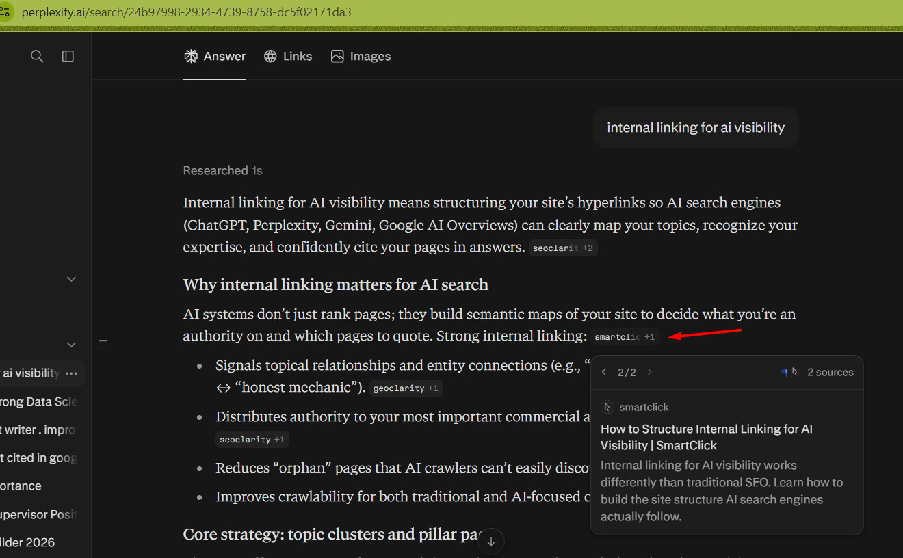

Keyword research
& strategy
Seed keyword discovery, SERP and competitor analysis, Ahrefs research, query fan-out, clustering and keyword-to-page mapping.
Research · Mapping · PrioritizationI help B2B SaaS brands get found in Google and recommended in AI answers—from research and strategy to writing, publishing and ongoing optimization.
THE APPROACH
Useful content starts with understanding what people search for—and what helps them make a decision.
WHAT I DO
A connected process designed to support the full buying journey, not just traffic.
Seed keyword discovery, SERP and competitor analysis, Ahrefs research, query fan-out, clustering and keyword-to-page mapping.
Research · Mapping · PrioritizationContent planning across TOFU, MOFU and BOFU, informed by SERPs, People Also Ask, Reddit and community questions.
Topic clusters · Content calendarsAudits, contextual anchor mapping, pillar and cluster structures, and funnel-aware links implemented in WordPress or documented for implementation.
Audits · Link maps · ImplementationReader-first content aligned with search intent, with clear answers, useful comparisons, contextual links and FAQs. Existing content is refreshed based on evidence.
Writing · Refreshes · OptimizationSELECTED WORK
A selection of examples and work visuals from the portfolio.

Content examples from the original portfolio.

Examples of content and on-page work.

More work examples from the PDF.
REOPTIMIZATION RESULTS
Figures below are reported in the supplied portfolio and compare equal-length 14-day periods.
VIRTUAL TRY-ON · OCUCO
+782.9% impressions · 21 Jul–3 Aug vs. 8–21 Aug 2026
Updates included a revised intro, H1 and metadata, new buyer-focused headings, additional best practices and four FAQs.
OPTOMETRY PRACTICE KPIS
+26.7% impressions · 3–16 Aug vs. 22 Aug–4 Sep 2026
Updates included query-aligned headings, a revised meta description, improved internal links and five FAQs.
Results are from Google Search Console as described in the supplied portfolio. They are page-level comparisons and do not establish that any single change caused the full difference.
HAVE A PROJECT IN MIND?
Have a content challenge or want to discuss a project?
Email me ↗Replace this placeholder email with your preferred contact address.